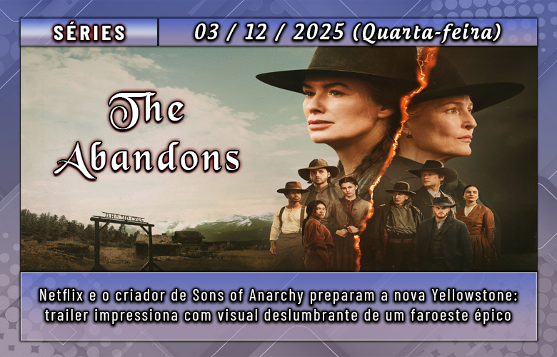
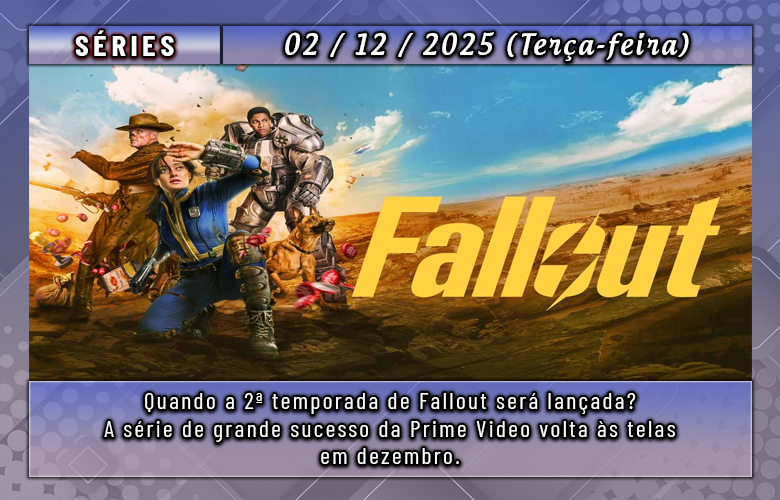

A HBO divulgou um novo pôster de O Cavaleiro dos Sete Reinos, série ambientada no universo de As Crônicas de Gelo e Fogo e derivada de Game of Thrones. Veja a arte recém-lançada:
Sobre a produção:
Situada cerca de cem anos antes dos eventos de Game of Thrones, O Cavaleiro dos Sete Reinos narra as aventuras de Sor Duncan, o Alto — um cavaleiro errante de origens humildes — e de seu escudeiro Egg, um garoto de cabeça raspada que esconde a verdade sobre sua identidade.
A dupla percorre Westeros em busca de propósito, reconhecimento e meios de sobrevivência, enfrentando nobres enganosos, perigos inesperados e as tensões de um continente ainda governado pela dinastia Targaryen.
O elenco conta com Peter Claffey, Dexter Sol Ansell, Finn Bennett, Bertie Carvel, Tanzyn Crawford, Daniel Ings e Sam Spruell.
A direção fica a cargo do mesmo responsável por San Junipero, de Black Mirror (2011).
Confira o vídeo teaser da série:

O sucesso de Yellowstone pode finalmente encontrar um rival.A nova série da Netflix chega prometendo sacudir o catálogo e conquistar o público como poucas produções fizeram.
No começo do ano, a Netflix alcançou um bom desempenho com a violenta minissérie Terra Indomável. Ainda assim, a plataforma não chegou perto do impacto de Yellowstone, que além de sua série principal de faroeste contemporâneo — já concluída — se expandiu em uma grande franquia repleta de spin-offs.
Agora, para fechar o ano, o serviço de streaming aposta em uma nova produção épica do gênero faroeste, criada justamente para tentar disputar espaço com Yellowstone — e conta, para isso, com a participação de um autor de grande renome.
The Abandons, a nova grande aposta da Netflix, foi criada por Kurt Sutter, o mesmo responsável por Sons of Anarchy. Além de roteirizar, Sutter assumiu os papéis de produtor e showrunner durante boa parte da produção — mas deixou o projeto inesperadamente pouco antes do término das filmagens. A saída teria acontecido por diferenças criativas, já que a Netflix estaria insatisfeita com um corte inicial dos dois primeiros episódios.
Com a saída dele, o diretor e produtor Otto Bathurst assumiu a liderança ao lado do co-produtor Robert Askins, supervisionando as etapas finais e toda a pós-produção. Mesmo com os atrasos provocados pela dupla greve de Hollywood em 2023, a série foi finalizada e já tem estreia marcada: 4 de dezembro de 2025.
Lena Headey vs. Gillian Anderson: assim é The Abandons
Ambientada na década de 1850, no Oregon, a trama acompanha Fiona Nolan (interpretada por Lena Headey, de Game of Thrones), uma irlandesa profundamente religiosa que sonha em garantir uma vida tranquila para sua família. Sem poder gerar filhos, ela decide adotar quatro órfãos, acreditando que poderá oferecer a eles um futuro digno e seguro.

A segunda temporada da série baseada no jogo pós-apocalíptico Fallout chega à Prime Video em 15 dias.
Com nomes como Ella Purnell, Aaron Moten e Walton Goggins no elenco, os novos episódios estreiam no dia 17 de dezembro, exclusivamente na plataforma.
Cronograma de lançamentos de ‘Fallout’
A nova temporada terá episódios liberados semanalmente no serviço de streaming. Serão oito capítulos ao todo, com conclusão marcada para 4 de fevereiro de 2026.
A produção segue disponível apenas para assinantes em mais de 240 países e territórios. A primeira temporada, que já ultrapassou 100 milhões de espectadores no mundo, continua no catálogo.
Qual é a história da 2ª temporada de ‘Fallout’?
A narrativa continua exatamente de onde a primeira temporada parou. Os protagonistas agora seguem para a região arrasada do Mojave e para a cidade pós-apocalíptica de New Vegas.
Mantendo a essência da franquia, o enredo destaca um mundo dividido entre privilegiados e sobreviventes à margem, cerca de 200 anos após o colapso nuclear.
Moradores de abrigos confortáveis precisam encarar a dura vida da superfície, cheia de ameaças, mutantes e situações imprevisíveis.
Além dos personagens conhecidos, os novos episódios apresentam reforços no elenco, como Kumail Nanjiani e Macaulay Culkin.
A seguir, confira o trailer da segunda temporada de Fallout.
Percy Jackson e os Olimpianos se firmou como uma das produções de maior sucesso do Disney+, sendo elogiada por entregar uma adaptação fiel aos livros de Rick Riordan — e, em breve, os fãs poderão conferir novos episódios.
A 2ª temporada estreia no streaming em 10 de dezembro, adaptando o segundo livro da saga, “O Mar de Monstros”.
Assim como a primeira temporada, o novo arco terá oito episódios, com os seguintes títulos:
Episódio 1: I Play Dodgeball with Cannibals (Eu jogo queimada com canibais)
Episódio 3: We Board the Princess Andromeda (Embarcamos no Princesa Andrômeda)
Episódio 4: Clarisse Blows Up Everything (Clarisse explode tudo)
Episódio 5: We Check In to C.C.’s Spa & Resort (Fazemos check-in no Spa & Resort da C.C.)
Episódio 6: Nobody Gets the Fleece (Ninguém consegue o velocino)
Episódio 7: I Go Down with the Ship (Afundo junto com o navio)
Episódio 8: The Fleece Works Its Magic Too Well (O velocino faz sua magia bem demais)
Confira o poster da segunda temporada:
A trama acompanha Percy Jackson, um adolescente que descobre ser um semideus — metade humano, metade divino. Filho de Poseidon, o soberano dos mares na mitologia grega, Percy precisa aprender a lidar com seus poderes recém-despertos. No Acampamento Meio-Sangue, um refúgio para jovens como ele, ele cria laços com Grover e Annabeth. Grover é um sátiro com grande sensibilidade à natureza e às emoções alheias, enquanto Annabeth, herdeira da deusa Atena, é inteligente, estratégica e sempre curiosa.
O trio embarca em uma missão para evitar uma guerra entre os deuses do Olimpo. Logo após descobrir sua verdadeira identidade, Percy é injustamente acusado por Zeus, seu tio e deus dos céus, de ter roubado seu raio-mestre. Para provar sua inocência e restaurar a paz no Olimpo, Percy e seus amigos atravessam o país em busca do artefato perdido.
O elenco principal conta com Walker Scobell (Percy Jackson), Leah Sava Jeffries (Annabeth Chase), Aryan Simhadri (Grover Underwood), Dior Goodjohn (Clarisse La Rue) e Charlie Bushnell (Luke Castellan).